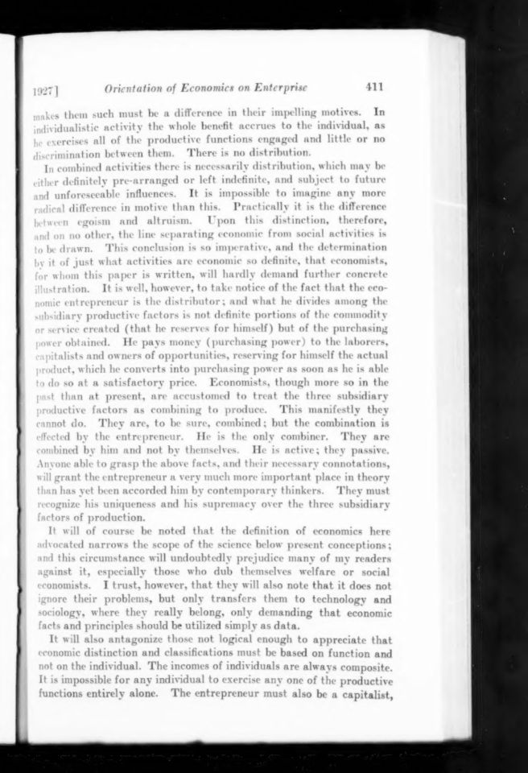

Winston, 1927: o comércio segue o dólar? A caça ao unicórnio
Leitura: 9 min
Winston testa nas ferrovias da China, Argentina, Brasil e Chile a crença de que investir no exterior garante vendas: os franceses investiram muito e venderam pouco; americanos e alemães, o contrário.


Em maio de 1925, o senador Medill McCormick escreveu no Saturday Evening Post que os materiais das ferrovias e obras públicas, os engenheiros e os empreiteiros costumam vir do país que fornece o capital, e que por isso o material rodante das ferrovias argentinas era britânico e o das brasileiras, americano. A. P. Winston, da University of Texas, começa por essa e outras declarações semelhantes para examinar uma opinião que diz ter aceitação geral: a de que o investimento no exterior estimula as exportações do país investidor.
A crença tinha duas versões. Na primeira, o empréstimo, como os feitos às ferrovias do governo chinês, traria no contrato a obrigação de comprar materiais e equipamentos no país dos credores. Na segunda, o investimento direto, como a ferrovia sul-americana construída por companhia europeia, levaria os administradores a preferir os fabricantes de sua nacionalidade. Entre os defensores, Winston cita James A. Farrell, presidente da United States Steel Corporation, segundo quem muitos projetos financiados por banqueiros europeus estipulavam a compra de materiais no país financiador, além de funcionários do governo americano e do embaixador do Brasil nos Estados Unidos.
Numa nota, Winston separa duas coisas. É verdade, diz, que empréstimos e outras exportações de capital acabam provocando exportação de mercadorias do país credor, porque é assim que se faz qualquer pagamento ao exterior. Mas esse efeito sobre o total exportado é muito diferente de um monopólio no fornecimento da obra financiada. É este último que ele quer testar, numa questão que considera essencialmente de psicologia comercial.
Como testar a crença?
Para o teste, escolhe as ferrovias da China e as da Argentina, do Brasil e do Chile, que somavam quase nove décimos da quilometragem sul-americana, e os anos anteriores à guerra, para evitar as anormalidades do comércio do pós-guerra. Começa pelo raciocínio. Nenhum tomador aceitaria de bom grado uma cláusula que o obrigasse a comprar mais caro; ela só poderia ser imposta por coação ou fraude. E os administradores de uma ferrovia estrangeira não teriam motivo, salvo o patriotismo, para preferir os produtos de seus compatriotas, quando as próprias ferrovias da França e de outros países usavam muito equipamento importado.
Além disso, as ferrovias sul-americanas não davam margem para generosidade. As argentinas renderam 3,44% sobre o investimento em 1877 e 4,44% em 1910; só cerca de 20% das brasileiras pagavam adequadamente, e a razão operacional do conjunto foi de 83,81% em 1913. Nas concorrências, as diferenças de preço eram grandes: em casos que Winston reúne, a distância entre propostas foi de 60 mil dólares num caso e chegou a 70% em outro. Seria impossível acreditar, conclui, que a nacionalidade decidisse a compra ignorando diferenças desse tamanho.
O que diziam os contratos e as leis?
Winston examina os dezessete contratos importantes de empréstimo para ferrovias do governo chinês firmados com americanos e europeus de 1898 a 1914. Em todos, menos um, os credores eram nomeados agentes de compra, mas em todos, menos esse mesmo, o das ferrovias do Norte da China, exigia-se compra no melhor mercado ou no mercado aberto. As compras estavam sempre sujeitas a controle chinês; em sete contratos, as concorrências seriam abertas pelo próprio governo chinês.
Na Argentina, a lei nº 775, de 17 de julho de 1876, estabeleceu que todas as obras públicas por conta do tesouro nacional seriam contratadas por concorrência pública, com exceções limitadas, como gastos de até 1.000 pesos. O Chile tinha regras cuidadosas para obras e fornecimentos ferroviários públicos, e no Brasil o decreto nº 1.126, de 18 de dezembro de 1903, serviu de modelo para a concorrência na construção ferroviária do governo. Mesmo para ferrovias privadas, a legislação sul-americana controlava as despesas, sobretudo das que tinham garantia de juros do governo.
Quem era dono e quem vendia?
Winston levanta a propriedade das ferrovias. No fim de 1909, a Argentina tinha 14.910 milhas em operação, 13,5% do governo e 86,5% privadas; destas, 11.317 milhas eram britânicas e 1.418 francesas, e não havia capital alemão. No Chile, em 1912, de um investimento de cerca de 176,5 milhões de dólares, o Estado detinha 49,22% e os britânicos 46,9%. No Brasil, no fim de 1911, de 13.817 milhas, os interesses franco-belgas e franceses dominavam 46,26%, os britânicos 23,5% e os alemães apenas 32 milhas. As linhas tidas por americanas, como a Brazil Railway, eram incorporadas no Maine, mas pertenciam sobretudo a europeus.
As tabelas de importação de locomotivas, vagões e trilhos de 1909 a 1913 contam outra história. Os britânicos, com toda a sua capacidade, não abasteceram nem as próprias ferrovias: no Chile, onde tinham 46,9% da propriedade, venderam 30,6% dos vagões e 25,9% dos trilhos. Os franceses, com quase 10% das ferrovias argentinas, venderam 1,2% das locomotivas, 2,58% dos vagões e 3,7% dos trilhos; no Brasil, com interesse predominante em quase metade da quilometragem, praticamente nenhuma locomotiva ou vagão.
Na China, antes da guerra, havia pouco mais de 6.000 milhas de ferrovia, cerca de 2.800 em linhas do governo construídas com capital estrangeiro. Os Estados Unidos, com um único empréstimo que levou a construção, o de Brice, de 1898, venderam cerca de 11,5 milhões de dólares em trilhos e material rodante, enquanto o fornecimento ligado ao capital americano dificilmente passaria de 300 mil dólares. Os franceses, que puseram pelo menos 15 milhões de dólares na linha Pequim–Hankow, exportaram para a China, nos seis anos de sua construção, 320 mil dólares em material rodante, para uma linha de 818 milhas que exigiria pelo menos 3,2 milhões. Winston atribui o resultado à menor capacidade dos fabricantes franceses de competir nesse tipo de produto.
Onde está o investidor patriota?
Depois dos números, os testemunhos. O próprio Farrell, perguntado sobre o que vendiam seus agentes em Paris, respondeu que trilhos, principalmente a compradores franceses que construíam ferrovias em outros países. Relatórios consulares britânicos e belgas explicavam as vendas de locomotivas americanas no Brasil pelo preço e pela adequação às ferrovias do país. B. Olney Hough contou ter sugerido a banqueiros de investimento que orientassem suas aplicações para aumentar o comércio exterior do país; eles, segundo o relato, apenas deram de ombros.
Winston descreve então uma peregrinação. Nos Estados Unidos, as autoridades mandam procurar o investidor patriota na Europa, mais precisamente na Inglaterra. Na Inglaterra, C. K. Hobson, em Export of Capital, não dá sinal de conhecer a velha prática britânica, e Hartley Withers escreve que não é costume inglês estipular que o dinheiro seja gasto no país, mas indica onde encontrá-lo.
“No continente essa estipulação é usual.” (On the continent this stipulation is usual.)
Na Alemanha, Sartorius von Waltershausen abre seu capítulo sobre capital exportado com a queixa de um periódico alemão: banqueiros do país tinham emprestado ao México dinheiro usado para comprar material ferroviário americano e inglês, e os bancos alemães deveriam adotar a posição americana e inglesa.
A conclusão é que cada nação vendeu em proporção à sua capacidade industrial. Os investidores, em empreendimentos arriscados e muitas vezes deficitários, não poderiam sacrificar sua vantagem ao patriotismo, e os tomadores recusaram-se a dar monopólio de fornecimento. O investidor patriota é descrito nos Estados Unidos como europeu, na Inglaterra como continental e na Alemanha como britânico ou americano.
“ele habita lugares inacessíveis e por isso raramente é visto” (he dwells in inaccessible places and is therefore seldom seen)
A frase, com que André Marin, médico de Veneza, descreveu o unicórnio séculos antes, fecha o argumento. Winston atribui a força da crença a dois erros: a tradição mercantilista de que um país é afortunado na medida de suas exportações, e o esquecimento de que a exportação de capital consiste sempre numa exportação de mercadorias. Reservar esse processo a uma classe de produtos, como o material ferroviário, seria sacrificar outros produtores em favor do grupo escolhido, sem acrescentar nada ao total exportado.
Na minha leitura
Na minha leitura, o artigo é um exemplo de como testar uma crença de política econômica com três tipos de evidência ao mesmo tempo: o incentivo dos agentes, o desenho dos contratos e das leis, e as estatísticas de comércio. Cada uma, sozinha, seria contestável; juntas, apontam na mesma direção. A comparação entre a participação de cada país na propriedade e nas vendas é simples e eficaz.
O argumento final é de equilíbrio geral: se o capital exportado sai de qualquer modo sob a forma de mercadorias, amarrar o empréstimo a uma indústria só muda a composição das exportações, não o total. É a mesma objeção que se faz até hoje a políticas que prometem ganhos agregados a partir de preferências setoriais.
Glossário
- Exportação de capital
- empréstimo ou investimento feito por residentes de um país no exterior.
- Agente de compra
- quem compra em nome de outro, como os credores nomeados pelos contratos chineses.
- Concorrência pública
- seleção do fornecedor por propostas abertas, em vez de escolha direta.
- Razão operacional
- proporção da receita de uma ferrovia consumida pelas despesas de operação.
- Garantia de juros
- compromisso do governo de completar o rendimento mínimo do capital da concessionária.
- Mercantilismo
- doutrina que via nas exportações e no acúmulo de metais a medida da riqueza nacional.
Fontes
- Does Trade “Follow the Dollar”? — A. P. Winston (The University of Texas) (pp. 458–477). Internet Archive (número completo, PDF)
- Edição completa, com os demais artigos: Nº 204 do Arquivo.
Documento em domínio público (EUA, publicado antes de 1931), via JSTOR Early Journal Content e Internet Archive. Resumo e comentário do autor deste site, sem afiliação com a American Economic Association. Encontrou um erro? Escreva: a correção é publicada no próprio texto, com data.
← Crum, 1927: quanta matemática exige a estatística econômica ↑ Nº 204 · Hawley e o empresário, Winston e o dólar, a fome de sal no Equador Fetter, 1927: a fome de sal no Equador →